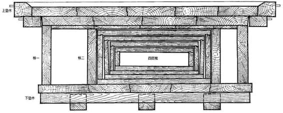
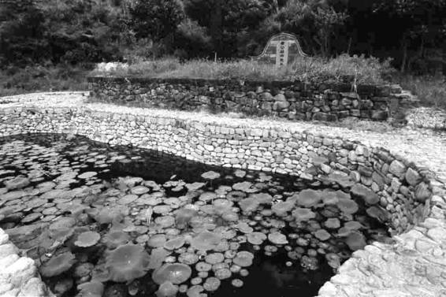

康熙二十七年（1688），七十八岁的黄宗羲开始考虑后事。他写信给远在北京的儿子黄百家：
吾死后，即于次日舁至圹中，殓以时服，一被一褥，安放石床，不用棺椁，不作佛事，不做七七，凡鼓吹、巫觋、铭旌、纸钱、纸旛，一概不用。[1]
黄百家是因修《明史》而被清廷征召至京。一见信，他便“皇遽告辞”，请假回乡。上司得知，也当即特准其“在家纂辑，携书亟归”。总之,信中的想法，任何人看来都足堪惊骇。
厚葬，是中国重要而根深蒂固的传统，它来自居正统地位的儒家伦理。春秋末年，比孔子后起、同样在鲁国推销其学说因而与儒家有思想竞争关系的墨子，曾以诋毁的口气谈道：
厚葬久丧，重（读chónɡ）为棺椁，多为衣衾……此足以丧天下。[2]
黄宗羲眼下表示要做的，似在迎合墨子的批判，两者惊人地吻合。
我们来看他的具体打算：一、死后第二天就入土——这是反对“久丧”（繁琐冗长的过程）。二、“殓以时服”，下葬时只想和日常一样着装——这是拒绝专门置办寿衣，反对“多为衣衾”。三、所有大操大办、乌烟瘴气的套路，那些意在营造哀荣气氛的厚葬风俗与手法，他欲一应摈除。四、最惊世骇俗的，当系“安放石床，不用棺椁”。棺椁，是厚葬的内容重点和集中体现。以往每个中国人，一俟人到中年，即以拥有一口好棺木为余生奋斗目标。它与人之间，有标识贫富贱贵之差的意义。富贵的程度及等级每提高一步，都在棺木上有所表现。《庄子•天下》：“天子棺椁七重，诸侯五重，大夫三重，士再重。”[3]椁，是棺外所套大棺。天子从里到外有七层，诸侯五层，为官者可以三层，知识分子可有二层，普通平民有棺无椁。这就是墨子“重为棺椁”一语的具体内容。倘依古制，黄宗羲可享受一棺一椁的待遇，而他的意思是什么也不要——实际上，他想要裸葬。
我们暂不探讨他这么做的原因，而先指出其后果。以当时论，以上想法倘然果行，有两点是一定的。第一，黄宗羲本人将被目为离经叛道。第二，子女亲属必然背负沉重巨大的不孝骂名。
黄宗羲不是墨子，不是任何意义上的儒家反对者。相反，他是地地道道的名教中人，是明末尤其自清朝康熙年以来享誉儒林的耆宿、大儒。祼葬之念，根本逾越、违背了儒家的“核心价值观”。这一点，他当然十分清楚。
真正的压力在子女亲属身上。就黄宗羲本人而言，既然抱定一种价值观，是可以不顾物议，以“身后是非谁管得”的态度，超然去往另一个世界。而子女亲属无法做到超脱，他们将继续留在人世，去面对强大的舆论和习俗。儒家伦理有如一张蛛网，覆盖生活每个角落；何况蛛网早不仅结在外部世界，也布满和裹住了每个人自己的心灵。
所以，愿望能否实现，直接和最大的障碍或许恰恰是家人。黄宗羲给黄百家写信，距其终辞人世，尚有七年。之所以早早放出风声，一定出于周详的考虑。第一，以此表示，祼葬意愿不是心血来潮，而是郑重的决定；第二，留出充分时间做家人的工作，使他们最终能够消化这一想法。毕竟，身后事将由家人料理。他本人再坚决，愿望都有两种可能：被执行，或者不被执行。他需要防范因家人思想不通，死后在身不由己情况下，葬事被处理成所反感的样子。
事情正如所料，七年中，亲属一直设法劝他收回成命，但他从不稍动。康熙三十四年（1695，他于这年逝世），年逾八秩的黄宗羲，把当初借书信吐露的心声，正式立为遗嘱，此即收在《黄宗羲全集》第一册的《梨洲末命》。明确规定：“吾死后，即于次日之蚤，用棕棚抬至圹中。一被一褥，不得增益。棕棚抽出，安放石床。圹中须令香气充满，不可用纸块钱串一毫入之；随掩圹门，莫令香气出外。”又新增有关祭扫的要求：一、“上坟须择天气晴明”——必须是阳光灿烂的日子，断不可恪守俗期而在阴雨天致祭（“清明时节雨纷纷”）；二、“凡世俗所行折斋、做七”，这些神神鬼鬼的仪式，“一概扫除”；三、凭吊者不得携纸钱、烛火之类，“尽行却之”，对那些“相厚之至”而坚持有所表示的亲友，可以告知欢迎他们“于坟上植梅五株”。[4]

汉代棺椁剖面图
此系马王堆汉墓棺椁结构，由二层椁室、四层套棺组成，还有上下垫木，计用木板七十块、五十二立方米，其中最大的单块木板重达一千五百公斤。墓主身份为汉初列侯（轪侯）。

黄宗羲墓
在余姚化安山中，左近有其父黄尊素墓。他对自己实行裸葬，墓内仅石床一座，不用棺椁。墓前荷池，是他所要求的：“其下小田，分作三池，种荷花。”（《梨洲末命》）
对这份正式遗嘱，亲属也不甘心接受。过去七年，黄宗羲三子中长子、次子相继殁故，眼下，三子百家是遗嘱唯一执行人。这意味着全部压力，俱落其一人肩上，他难以支承，便求族中长者做父亲工作，使事情稍稍可行。黄百家提出：“诸命皆可遵，独不用棺椁一事，奈何？”搁弃其他争议，只请黄宗羲同意用棺。但在黄宗羲，裸葬正是不可更改的。为此，他端出父道尊严的架子：“噫！以父之身，父不能得之子耶？”父亲的吩咐，儿子可以不照办么？
他知道，光靠“父为子纲”不行，还要讲更多的道理。他专门作了一篇《葬制或问》，征史稽古，论证祼葬之举既有充分依据，更为不少先贤所实践。主要引述了四件材料：第一，《西京杂记》记载，直到汉代，“所发之冢，多不用棺”，说明裸葬不单曾经很普遍，且更合古风、古意。第二，东汉大儒、《孟子章句》作者赵岐“敕其子曰：‘吾死之日，墓中聚沙为床，布箪白衣，散发其上，覆以单被。即日便下，下讫便掩。’”第三，宋代命理大师陈希夷，著名的“陈抟老祖”，“令门人凿张超谷，置尸于中”。第四，汉武帝时“杨王孙裸葬，而子从之，古今未有议其子之不孝者”。[5]
杨王孙的例子，是专讲给黄百家、帮他打消顾虑的。杨王孙是实行裸葬的代表人物，他的特点在于，“家业千金”、以极富之人而坚决抵制厚葬，立遗言：“吾欲臝（通“裸”）葬，以反吾真，必亡（勿）易吾意。死则为布囊盛尸，入地七尺，既下，从足引脱其囊，以身亲土。”其子万般为难，“欲默而不从，重废父命，欲从，心又不忍”，便请父亲的至交祁侯代为相劝，祁侯给杨王孙写了一封信，杨王孙修书作答，条分缕析，祁侯完全折服，“曰：‘善。’遂臝葬。”[6]
《葬制或问》，便是黄宗羲版《答祁侯书》。文章替反对者设想了各种理由，并揣摩他们可能的心态及做法。其中写道：“问者曰：‘诤之不可。父死之后，阴行古制，使其父不背于圣人，不亦可乎？’”显然是给儿子打预防针，戒之不得阳奉阴违，严厉指出：“恶！是何言也！孝子之居丧，必诚必信……父之不善，尚不敢欺。父之不循流俗，何不善之有？”敢作此想，岂止不孝，何异欺父、叛父。
又将两首诗，付诸子手：
筑墓经今已八年，梦魂落此亦欣然。莫教输与鸢蚁笑，一把枯骸不自专。
年来赖汝苦支撑，鸡骨支床得暂宁。若使松声翻恶浪，万端瓦裂丧平生。
鸢蚁，指大大小小生灵。松声，以墓旁常植松柏，借喻墓园环境。他说：别让我一把枯骨不能自专，连鸢蚁之类都不如；别让我于九泉下听到那样的消息，儿子在人世违我意愿，令我一生瓦全亦不可得。话说得很重，也相当恳切。
黄百家述至此，枉然叹道：“呜呼！严命如此，不孝百家敢不遵乎？”[7]